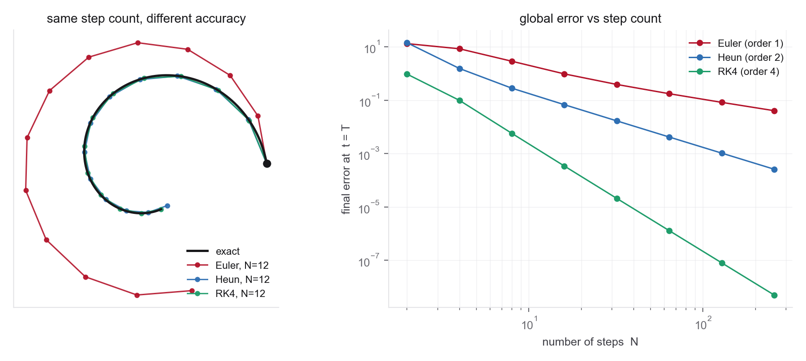
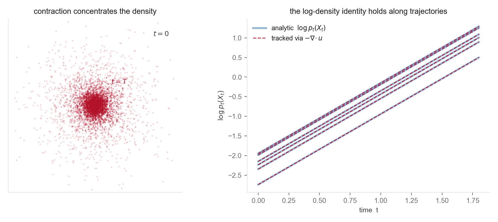
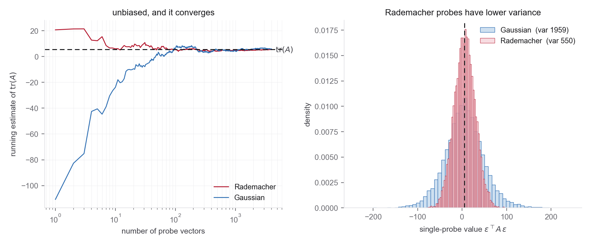
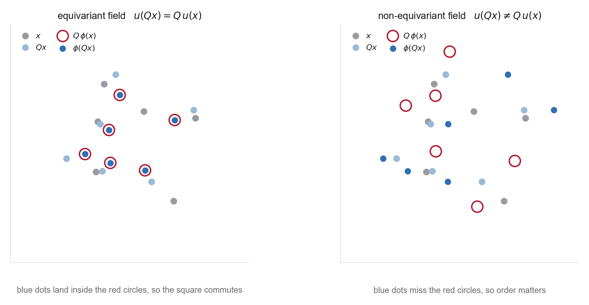

These notes condense the Week 1 readings into the ideas you actually need, organized by concept rather than by paper. Every section names where it comes from and which problem puts it to work. A companion notebook reproduces every figure, so you can change a field, a step count, or a probe distribution and rerun. Notation follows the MIT notes, with time running from \(t=0\) at the noise end to \(t=1\) at the data end.
1.1Generation as sampling
Generation means drawing a sample from a data distribution \(p_{\mathrm{data}}\) on \(\mathbb R^d\). The vague goal of a "good" molecule or image becomes the precise goal of a sample that is likely under \(p_{\mathrm{data}}\). A generative model is anything that returns such samples after training.
We never hold \(p_{\mathrm{data}}\) itself, only a finite dataset \(z_1,\dots,z_N\). The honest object is the empirical distribution, a sum of point masses,
It has no smooth density on \(\mathbb R^d\) and no usable gradient, so the naive score \(\nabla_z\log\widehat p_{\mathrm{data}}\) is undefined. That single fact drives much of what follows. The fix, smoothing the empirical measure before differentiating, is exactly the denoising idea Week 2 is built on.
1.2Vector fields, ODEs, and flows
A velocity field \(u_t(x)\) assigns a velocity to every point \(x\) and time \(t\). Following it from a start point gives a trajectory, the solution of the ordinary differential equation
The flow map \(\psi_t\) solves this for every start at once, so a single trajectory is recovered as \(X_t = \psi_t(X_0)\). Vector field, ODE, and flow are three descriptions of one object. Under mild conditions, \(u_t\) continuously differentiable with bounded derivative, the flow exists, is unique, and each \(\psi_t\) is a diffeomorphism, a smooth invertible warp of space. Neural networks meet these conditions, so existence is never the concern. For the linear field \(u_t(x)=-\theta x\) the flow is the closed form \(\psi_t(x_0)=e^{-\theta t}x_0\).
A flow model draws \(X_0\sim p_{\mathrm{init}}\), usually \(\mathcal N(0,I_d)\), and integrates a neural field \(u_t^\theta\) so that the endpoint matches the data,
The network parameterizes the field, not the flow. To produce a sample you have to simulate the ODE. The figure below shows the three objects of the week, all from one field, the picture to keep in mind for everything that follows.

1.3Simulating a flow
Closed forms like \(e^{-\theta t}x_0\) are the exception, so in general the ODE is integrated numerically. Euler takes one step along the current velocity,
Heun takes a trial Euler step, then averages the velocity at the start and the trial point, which makes it second order. RK4 combines four evaluations and is fourth order. More steps cut the error, and higher order cuts it faster, as the slopes below show.

There is a deeper reason to care about this. A residual network update \(h_{t+1}=h_t+f(h_t)\) is one Euler step, and the limit of stacking infinitely many small steps is exactly an ODE of the form above. Continuous depth is just time, and the network specifies the velocity. That is the bridge from familiar deep nets to the flows of this course.
1.4How densities move, and the continuity equation
The flow carries points, and it carries probability mass with them. The law of \(X_t\) is the pushforward of the base distribution, written \(p_t = (\psi_t)_\# p_0\). Because mass is neither created nor destroyed, \(p_t\) obeys the continuity equation,
the same conservation law that governs a compressible fluid. Reading it locally, density grows where the field converges, that is where the divergence \(\nabla\!\cdot u_t\) is negative, and thins where the field spreads out. This one equation links the field, the flow, and the moving density, and it returns in every later week.
1.5Change of variables, from normalizing flows to CNFs
A normalizing flow is an invertible map \(f\) from a simple base to the data, with inverse \(g=f^{-1}\). The change-of-variables formula tracks the density exactly,
Stacking \(K\) maps, the log-densities telescope into a sum of log-determinants, \(\log q_K = \log q_0 - \sum_{k}\log|\det \nabla f_k|\). The whole cost is that determinant. A general \(d\times d\) determinant is \(O(d^3)\), so early flows engineered structured maps, planar or coupling layers, whose Jacobian determinant collapses to something cheap. Invertibility plus a tractable determinant is the constraint that shaped those architectures.
Take the continuous limit, infinitely many infinitesimal steps, and the sum becomes an integral and the determinant becomes a trace. Along a continuous normalizing flow the log-density obeys the instantaneous change of variables,
No determinant, no hand-built invertibility. You integrate the state and its log-density together. The figure checks this against an exactly solvable case.

1.6The divergence bottleneck and the Hutchinson estimator
The continuous formula trades a determinant for a trace, but the exact trace \(\operatorname{tr}(\partial u/\partial x)\) still costs one automatic-differentiation pass per dimension, which is too slow in high \(d\). The escape is Hutchinson's identity, which holds for any probe vector \(\epsilon\) with \(\mathbb E[\epsilon\epsilon^\top]=I\),
The inner quantity \(\epsilon^\top(\partial u/\partial x)\) is a vector-Jacobian product, one reverse-mode pass at the cost of a single field evaluation. The trace estimate is then \(O(1)\) passes regardless of dimension, which is what makes continuous flows scale (FFJORD). Because the Jacobian is never formed, the field can be free-form, with none of the architectural constraints discrete flows needed.
The estimate is unbiased but noisy. Rademacher probes, entries \(\pm 1\), have lower variance than Gaussian ones because they cancel the variance contribution of the diagonal. In practice one fixes a single \(\epsilon\) for an entire ODE solve, which keeps the dynamics deterministic without adding bias.

1.7Why geometry matters
A generic vector in \(\mathbb R^d\) hides the structure of a molecule or crystal. A faithful model has to respect translation, rotation, permutation of identical atoms, and the periodicity of a lattice. The clean statement uses two distinct ideas. A density is invariant under a symmetry \(g\) when
and a velocity field is equivariant when it commutes with the symmetry, \(u(g\cdot x) = g\cdot u(x)\). The key fact is that an invariant base density pushed through an equivariant flow stays invariant. That is why equivariance is built into the architecture rather than learned from data. The figure shows equivariance as a square that commutes, rotating then flowing equals flowing then rotating.

Exact likelihood is also what connects flows to physics. A Boltzmann generator samples from a flow with known density \(q_X\) and reweights toward the equilibrium distribution \(e^{-u(x)}\) using the importance weight
which recovers unbiased equilibrium statistics and free energies even when the flow is only approximate. Sampling alone cannot do this, since the density in the denominator is what removes the bias. Finally, discrete chemistry sits awkwardly inside continuous flows. Atom and bond types are categorical, so graph flows resort to dequantization and step-by-step validity checks (GraphAF), and that mismatch never fully disappears. These tensions are what the equivariant networks, fractional coordinates, and hybrid models of later weeks exist to resolve.
1.8Looking ahead, from likelihood to regression
Training a continuous flow by maximum likelihood means integrating an ODE inside every gradient step, which is expensive. The modern pivot fixes a path between base and data and learns the velocity by regression instead. With the straight interpolant \(x_t = (1-t)x_0 + t\,x_1\) the instantaneous displacement is \(v = x_1 - x_0\), and fitting \(u_\theta(x_t,t)\) to it by least squares recovers the conditional expectation
which is exactly the velocity that transports the base to the data along the continuity equation (Albergo and Vanden-Eijnden). No likelihoods and no solver in the loop. This is the seed of flow matching in Week 3 and stochastic interpolants in Week 4, and Problem 5 is a hands-on first taste.
1.9One-page recap
- Generation is sampling from \(p_{\mathrm{data}}\). The empirical measure has no usable gradient, which forces smoothing later.
- A field \(u_t\) defines an ODE whose flow \(\psi_t\) is a diffeomorphism. A flow model integrates a neural \(u_t^\theta\) from noise to data.
- Simulate with Euler, Heun, or RK4. Order sets how fast error falls with step count. A ResNet is one Euler step.
- The flow transports density by the continuity equation \(\partial_t p_t + \nabla\!\cdot(p_t u_t)=0\).
- Discrete flows track density by a log-determinant. Continuous flows track it by \(\tfrac{\mathrm d}{\mathrm dt}\log p_t(X_t) = -\operatorname{tr}(\partial u/\partial x)\).
- Hutchinson's identity \(\operatorname{tr}(A)=\mathbb E[\epsilon^\top A\epsilon]\) makes the trace cheap and frees the architecture.
- Scientific data needs invariance \(p(gx)=p(x)\), secured by an equivariant field \(u(gx)=g\,u(x)\).
- Fixing a path and regressing the velocity replaces likelihood training, the road into Weeks 3 and 4.